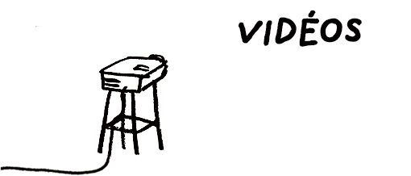
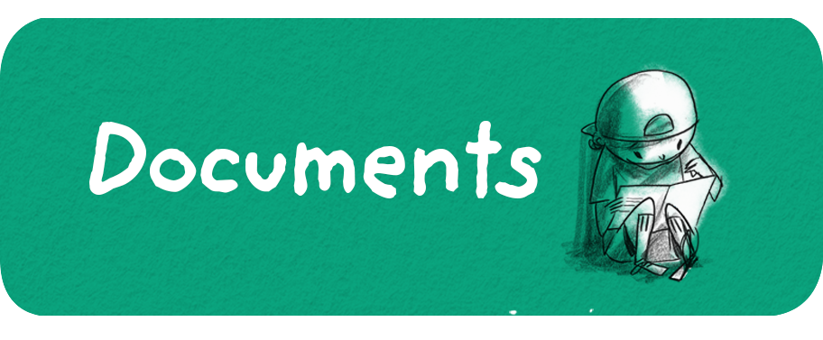
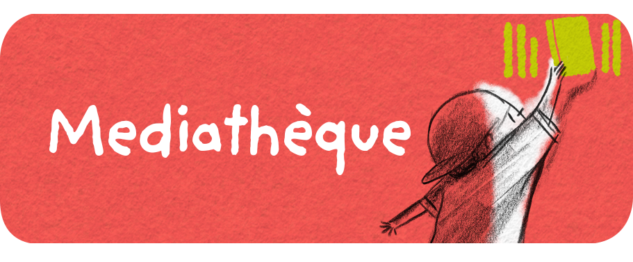

Connexion individuelle nécessaire pour consulter cette plateforme.
Retour à l’accueil



Retrouvez les moments clés de la formation pour revenir sur une thématique, préparer une séance ou ouvrir la discussion.
Vidéo à venir